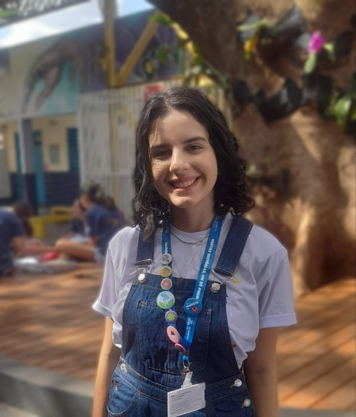

DIA DO ESTÁGIÁRIO
Maria Luiza é estagiária de ciências biológicas na Escola Social Irmão Acácio, ela nos conta um pouco sobre sua jornada na busca pela sua paixão em propor o mundo científico aos jovens

A caminhada de Maria Luiza, estagiária de Ciências Biológicas da Escola Marista Social Ir. Acácio, é inspiradora. Em nossa entrevista exclusiva, em prol da comemoração do dia do estagiário, ela compartilhou com alguns alunos do primeiro ano do ensino médio, suas experiências, desafios e paixão pela biologia, revelando como sua jornada acadêmica a levou a se destacar como uma futura educadora comprometida em despertar o amor pela ciência nos jovens estudantes.
Maria Luiza Abreu, uma jovem de 19 anos apaixonada pela área da educação, escolheu cursar Licenciatura em Ciências Biológicas no Instituto Federal do Paraná, Campus Londrina. Sua trajetória é marcada por uma profunda gratidão aos professores que a inspiraram a seguir a carreira docente. Originária de uma escola pública e atualmente frequentando uma instituição de ensino público, Maria Luiza tem como principal preocupação proporcionar aos estudantes o acesso a uma educação pública de qualidade.
Ao iniciar sua jornada acadêmica, ela sentiu a responsabilidade de retribuir à comunidade tudo o que recebeu. Acredita firmemente na importância da educação gratuita e busca, por meio de seu trabalho, levar aos estudantes aquilo que teve a oportunidade de aprender. Sua visão vai além do ensino de ciências e biologia, pois compreende que seu papel é ajudar os alunos a lidarem com as diversas experiências e desafios da vida.
Embora tenha percebido que a licenciatura não é capaz de prepará-la para todas as situações do cotidiano escolar, Maria Luiza encara cada desafio como uma oportunidade de aprendizado e crescimento. Ela reconhece que é na prática, no convívio com os estudantes, que adquire habilidades essenciais para lidar com as complexidades da profissão.
O que mais motiva Maria Luiza é o entusiasmo e a curiosidade dos alunos. Ela se sente recompensada ao ver o brilho nos olhos dos estudantes quando são apresentados a novas informações e descobrem um mundo de possibilidades. Essa energia positiva impulsiona sua dedicação diária, reforçando sua convicção de que a educação é um instrumento poderoso para transformar vidas.
Um momento marcante em sua carreira foi o trabalho com os sextos anos, nos quais teve a oportunidade de abordar temas como biodiversidade e o impacto das redes sociais no meio ambiente. Ver os alunos desenvolvendo um olhar crítico e despertando para a importância da preservação ambiental é algo que a enche de orgulho e satisfação.
Maria Luiza Abreu é uma educadora comprometida, dedicada a fazer a diferença na vida dos estudantes. Sua paixão pela docência e seu constante desejo de aprendizado são evidentes em sua história profissional até o momento. Ela é um exemplo inspirador de como um professor pode impactar positivamente a vida de seus alunos e contribuir para um futuro melhor através da educação.
Data da Publicação: setembro de 2023